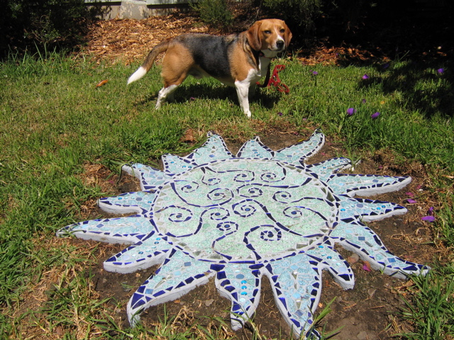

Up Next-->

Blueflower
In these pictures, Huxley shows off "Sol Flor", a five-part mosaic artwork by Jennifer Alexander, sponsored by the Black Rock Arts Foundation. "Sol Flor", which is in Juri Commons, the park on our block, is one of three projects which BRAF sponsored in San Francisco parks this summer which use recycled materials. The light blue and green glass is auto safety glass; the red and orange pieces are from automobile taillights.
Dave was one of the neighborhood group who helped to execute and install the work. Huxley didn't help, but everything looks better with a beagle.
"Sol Flor" was intended to be temporary, just like the Burning Man art projects from which BRAF sprang. But the neighborhood loves the work, so we're trying to get it left in place permanently. No guarantees, so see it while you can.